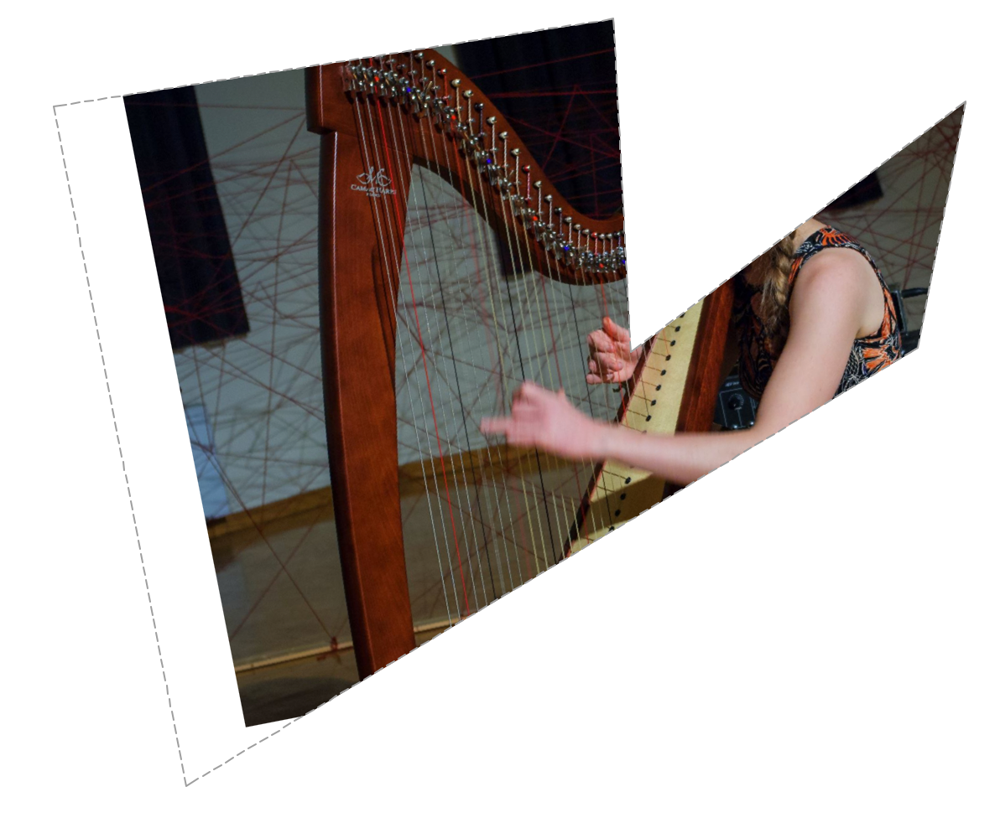

API_PrimPict
A picture inside a placed drawing.
typedef struct {
API_Prim_Head head;
short pixelSizeX;
short pixelSizeY;
Int32 filler_1;
double rotAngle;
API_Box destBox;
API_ColorDepthID colorDepth;
API_PictureFormat storageFormat;
GS::uchar_t pictName[API_UniLongNameLen];
char mime[128];
API_AnchorID anchor;
bool transparent;
bool mirrored;
short filler_2;
Int32 filler_3[4];
} API_PrimPict;
Members
- head
- General primitive element header.
- pixelSizeX
- Physical x size in pixels of the original picture.
- pixelSizeY
- Physical y size in pixels of the original picture.
- rotAngle
- The rotation angle.
- destBox
- Bounding box of the picture on the layout (without rotation and mirroring).
- colorDepth
- Color depth of the image.
- storageFormat
- Storage format of the picture.
- pictName[API_UniLongNameLen]

- Unicode (UTF-16) name of the picture.
- mime[128]

- MIME string identifying the image format.
- anchor
- The anchor point of the picture.
- transparent
- Tells if the picture is transparent.
- mirrored
- Tells if the picture is mirrored.
Remarks
 This structure formerly described a picture on a placed drawing on a PlotMaker layout. Since layouting was integrated into Archicad, it is the part of the drawing content of a API_DrawingType element.
This structure formerly described a picture on a placed drawing on a PlotMaker layout. Since layouting was integrated into Archicad, it is the part of the drawing content of a API_DrawingType element.
Many of the data members have similar meanings to those of API_PictureType.
The picture data is passed in the par1 parameter of the ShapePrimsProc function. The par2 parameter contains the standard MIME type of the picture.
The picture is not clipped by the border of the drawing on the layout. (Note: this is different from the behavior in PlotMaker.)
The picture here was imported as drawing, rotated, then placed on the layout, and rotated back. Its bounding polygon was also adjusted.

If you need the original picture data, switch to the drawing database, and fetch the information from there with ACAPI_Element_Get and ACAPI_Element_GetMemo.
Requirements
- Version: API 6.1 or later
- Header: APIdefs_Elements.h
See Also
API_PrimElement, API_Prim_Head, API_Box, API_ColorDepthID, API_PictureFormat, API_AnchorID, API Types